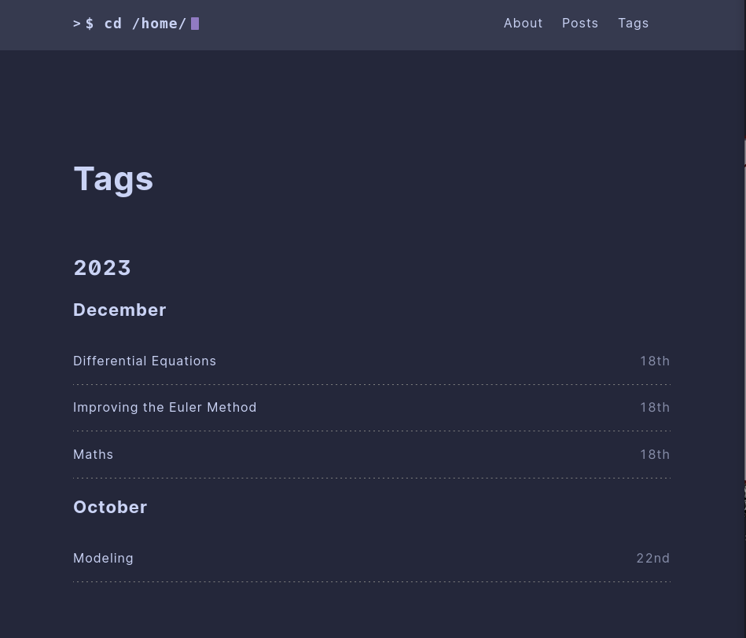

A new way to look at Categories in Hugo Blogs
Update: This site is now built around Quarto, but the basis of this idea still holds.
This site is built through blogdown, which is a marvellous little R package that integrates Hugo sites into a R workflow. A nice thing about Hugo sites are the large number of themes available to quickly integrate with your site to change the vibe. My theme is mostly just a recolored version of the hello-friend-ng theme, using catppuccin for the colors.
My only gripe with the theme is that it uses a default list for all types of content. If you want to look at all the posts, you see a list of posts; for tags, similarly, you get a list of tags.

Looking at the edges
A software that I’ve always been meaning to use is obsidian which is a note taking and organising software which uses plaintext. One of its features has always really intrigued me, is the graph view which organises all of the notes based on their connections.

I thought it would be cool to implement something like this in my Hugo site. Something that lets you not only look at all the tags, but see how they are connected.
Starting small
Before making the graph view, I wanted to make something that allows you to see all the posts with two of the tags. That way, when you click on a node or an edge in the graph you can be taken through to see all the posts with the relevant tags.
Unfortunately the scripting language used by Hugo doesn’t have this kind of filtering built in. So I have to do it rather un-elegantly in JavaScript.
To make the linking easier, I added the second tag using the query string so that it can be reached just using a href link.
{{ define "main" }}
<main class="posts">
<h1>{{ .Title }}</h1>
<div id="posts-container">
{{ $pages := where .Data.Pages "Params.tags" "intersect" (slice .Title) }}
{{ $paginator := .Paginate $pages }}
<ul class="posts-list">
{{ range $paginator.Pages }}
<li class="post-item" data-tags="{{ .Params.tags | jsonify }}">
<a href="{{ .Permalink }}" class="post-item-inner">
<span class="post-title">{{ .Title }}</span>
<span class="post-date">{{ .Date.Format "January 2, 2006" }}</span>
</a>
</li>
{{ end }}
</ul>
{{ partial "pagination-list.html" . }}
</div>
</main>
<script>
document.addEventListener("DOMContentLoaded", function () {
const urlParams = new URLSearchParams(window.location.search);
let additionalTag = urlParams.get("tag");
// Capitalize the first letter of each word
function toTitleCase(str) {
return str.replace(/\w\S*/g, function (txt) {
return txt.charAt(0).toUpperCase() + txt.substr(1).toLowerCase();
});
}
// Update the title with the capitalized query string tag if it exists
if (additionalTag) {
additionalTag = toTitleCase(additionalTag.replace(/-/g, " "));
document.querySelector("h1").textContent += " & " + additionalTag;
}
// Convert the additionalTag to lowercase and hyphenated format
if (additionalTag) {
additionalTag = additionalTag.toLowerCase().replace(/\s+/g, "-");
console.log(additionalTag);
const posts = document.querySelectorAll(".post-item");
posts.forEach((post) => {
const tagsString = JSON.parse(post.getAttribute("data-tags"));
// Convert tag string into a lowercase, hyphenated array of tags
const tags = tagsString.map((tag) =>
tag.trim().toLowerCase().replace(/\s+/g, "-")
);
console.log(tags);
// If the additional tag is not in the post's tags, hide the post.
if (!tags.includes(additionalTag)) {
post.style.display = "none";
}
});
}
});
</script>
{{ end }}Building the graph
Similar to the issue with creating the post listing page, constructing the graph requires some rather unwieldy JavaScript to make it work.
Fetching All the Posts
The first thing to do is to fetch all the posts from across the site with their tags.
// Create an array to hold all posts and their details
var postsData = [];
// Iterate through each page to collect its title, permalink, and tags
{{ range .Site.RegularPages }}
// Use 'jsonify' to convert tags to a JSON array, if tags are not present, default to an empty array
var tags = {{ if .Params.tags }}{{ .Params.tags }}{{ else }}[]{{ end }};
postsData.push({
title: {{ .Title }},
permalink: {{ .RelPermalink }},
tags: tags // This is now a real JavaScript array
});
{{ end }}
// Log the posts information in the console as JSON
console.log(postsData);
var tagsToPosts = {};
// Loop through each post
postsData.forEach(function(post) {
// Loop through each tag in the current post
post.tags.forEach(function(tag) {
// If the tag hasn't been added to tagsToPosts, initialize it with an empty array
if (!tagsToPosts.hasOwnProperty(tag)) {
tagsToPosts[tag] = [];
}
// Add the current post to the array for this tag
tagsToPosts[tag].push({
title: post.title,
permalink: post.permalink
});
});
});Invert the keys of the list
Now that there is a list of posts with there tags, we can now invert the list so that we have all the tags with their posts.
var tagsToPosts = {};
// Loop through each post
postsData.forEach(function(post) {
// Loop through each tag in the current post
post.tags.forEach(function(tag) {
// If the tag hasn't been added to tagsToPosts, initialize it with an empty array
if (!tagsToPosts.hasOwnProperty(tag)) {
tagsToPosts[tag] = [];
}
// Add the current post to the array for this tag
tagsToPosts[tag].push({
title: post.title,
permalink: post.permalink
});
});
});
// Log the new tags to posts dictionary
console.log(tagsToPosts);Make a matrix of connections
With the list of tags, we can now make a matrix showing all of the connections between the tags. This is really inefficient but it works well enough that I don’t think it requires too much optimisation.
// Get all unique tags
var uniqueTags = Object.keys(tagsToPosts);
// Initialize the matrix with zeros
var tagMatrix = uniqueTags.map(() => uniqueTags.map(() => 0));
// Function to check the intersection of posts for two tags
function getSharedPostsCount(tagA, tagB, tagsToPosts) {
var postsA = tagsToPosts[tagA];
var postsB = tagsToPosts[tagB];
var shared = postsA.filter(postA => postsB.some(postB => postA.permalink === postB.permalink));
return shared.length;
}
// Populate the matrix with shared post counts
for (let i = 0; i < uniqueTags.length; i++) {
for (let j = i; j < uniqueTags.length; j++) {
// We only need to calculate the upper triangular matrix due to symmetry
var sharedCount = getSharedPostsCount(uniqueTags[i], uniqueTags[j], tagsToPosts);
tagMatrix[i][j] = sharedCount;
tagMatrix[j][i] = sharedCount; // The matrix is symmetric so we mirror the count
}
}
// Log the matrix
console.log(tagMatrix);Build the graph
Building the graph was honestly one of the easiest parts of this project. The d3js library has an object called a force directed graph, has most of the features I would want baked in.
The only interesting thing I’ve done here is add in on-click links to the nodes and the edges that allow you to click through to see the relevant posts.
var width = window.innerWidth;
var height = window.innerHeight;
// Setup the window
var svg = d3.select("body")
.append("svg")
.attr("width", width)
.attr("height", height)
.style("display", "block")
.style("margin", "auto");
var nodeRadius = 60;
var collisionRadius = nodeRadius * 2;
// Setup the simulation
var simulation = d3.forceSimulation(nodes)
.force("link", d3.forceLink(links)
.id(d => d.id)
.distance(200)
.strength(d => 0.1 * d.value))
.force("charge", d3.forceManyBody()
.strength(d => -500 * (d.value + 1)))
.force("center", d3.forceCenter(width / 2, height / 2))
.force("collision", d3.forceCollide(collisionRadius))
.alphaDecay(0.01);
// System for dragging
var dragHandler = d3.drag()
.on("start", function(d) {
if (!d3.event.active) simulation.alphaTarget(0.3).restart();
d.fx = d.x;
d.fy = d.y;
})
.on("drag", function(d) {
d.fx = d3.event.x;
d.fy = d3.event.y;
})
.on("end", function(d) {
if (!d3.event.active) simulation.alphaTarget(0);
d.fx = null;
d.fy = null;
});
// Draw the line between the nodes
var link = svg.append("g")
.attr("class", "links")
.selectAll("line")
.data(links)
.enter().append("line")
.attr("stroke-width", d => Math.sqrt(d.value) + 10)
.attr("stroke", "#cad3f5")
.on("click", function(d) {
console.log(`Link clicked between ${d.source.id} and ${d.target.id}`);
let tagName1 = d.source.id.replace(/\s+/g, '-').toLowerCase();
let tagName2 = d.target.id.replace(/\s+/g, '-').toLowerCase();
window.location.href = `/tags/${tagName1}?tag=${tagName2}`;
});
var colors = [
'#f4dbd6',
'#b7bdf8',
'#ed8796',
'#f5a97f',
'#eed49f',
'#a6da95',
'#8bd5ca',
'#8aadf4',
'#c6a0f6',
'#f0c6c6'
];
function getRandomColor() {
return colors[Math.floor(Math.random() * colors.length)];
}
// Make the nodes
var node = svg.append("g")
.attr("class", "nodes")
.selectAll("circle")
.data(nodes)
.enter().append("circle")
.on("click", function(d) {
let tagName = d.id.replace(/\s+/g, '-').toLowerCase();
window.location.href = `/tags/${tagName}`;
})
.attr("r", nodeRadius)
.attr("fill", function(d) { return getRandomColor(); });
node.append("title")
.text(d => d.id);
simulation
.nodes(nodes)
.on("tick", ticked);
simulation.force("link")
.links(links);
dragHandler(node);
// Wirite out the labels
var labels = svg.append("g")
.attr("class", "labels")
.selectAll("text")
.data(nodes)
.enter().append("text")
.text(d => d.id)
.style("fill", "24273a")
.style("text-anchor", "middle")
.style("dominant-baseline", "central")
.on("click", function(d) {
let tagName = d.id.replace(/\s+/g, '-').toLowerCase();
window.location.href = `/tags/${tagName}`;
});
// Update function
function ticked() {
link
.attr("x1", d => d.source.x)
.attr("y1", d => d.source.y)
.attr("x2", d => d.target.x)
.attr("y2", d => d.target.y);
node
.attr("cx", d => d.x)
.attr("cy", d => d.y);
labels
.attr("x", d => d.x)
.attr("y", d => d.y);
}